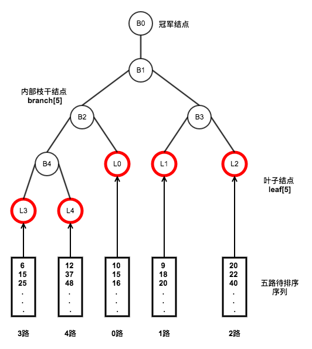

K 路归并排序
对于 K 路升序序列排序，最容易想到的方法是：依次取这 K 路序列的当前元素组成一个新序列（例如下面的序列 b），堆该序列进行两两比较，选出最小的数。循环 n 次就可以归并成一个长度为 n 的升序序列。时间复杂度为 O(nK)。
为了减小比较次数，可以使用堆、胜者树、败者树对此进行优化
以 b 序列 [10, 9, 20, 6, 12] 为例，分别使用堆、胜者树、败者树进行建堆或建树
1 堆
对序列 b 建小根堆如下

归并思路：从 K 个序列中各取一个元素，并记录每个元素的来源数组，建立一个含 K 个元素的小根堆。此时堆顶就是最小的元素，取出堆顶元素，并从堆顶元素的来源序列中取下一个元素放入堆顶，然后向下调整。在向下调整过程中需要和其两个子结点比较，需要比较 2 次。
堆结点存储结构与下面类似：
struct ElemType { unsigned int value; // 元素值 int src; // 来源数组的索引 };
2 胜者树
对序列 b 构建胜者树如下

胜者树在向上调整的时候首先需要获得父结点，然后再获得兄弟结点，然后再比较。比堆少一半的比较次数
3 败者树
对序列 b 构建败者树如下

败者树在向上调整的时候，只需要获得父结点并比较即可。相较于胜者树，它不必获取兄弟结点了，减小了访存时间
败者树是一棵完全二叉树。叶子结点存放各归并段在归并过程中参加比较的记录，内部结点用来存放左右子树中失败者叶子结点的索引，胜者会继续向上进行比较，一直到根结点
叶子结点一般设置为 leaf[K]，叶子结点为 K 个。完全二叉树的内部枝干结点就会有 K-1 个，一般我们会设置内部结点为 branch[K]，多出来的一个 branch[0] 用来存放一次调整过程的最终胜者

/* 当前代码为 K 路降序排序 注释部分代码为 K 路升序排序 缺点： K 路数据源必须等长 改进方法： 可增加一个数组 KArrEnd[K]，KArrEnd[i] 表示第 i 个数据源的最后一个元素的下标 */ #include <stdio.h> #include <stdbool.h> #define K 5 // 共有 k 路数组 #define LEN 6 // 每路数组长度为 LEN //#define INT_MAX 0x7fffffff // K 路合并成升序序列时，当一路数据源全部输出后，为叶结点填充的最大值 #define INT_MIN 0x80000000 // K 路合并成降序序列时，当一路数据源全部输出后，为叶结点填充的最小值 // K 路升序数组，每组 6 个元素 //int KArr[K][LEN] = //{ // {5, 13, 25, 33, 49, 50}, // {22, 24, 29, 35, 44, 55}, // {8, 15, 26, 26, 43, 54}, // {5, 16, 23, 30, 46, 56}, // {9, 19, 21, 38, 45, 52} //}; // K 路降序数组，每组 6 个元素 int KArr[K][LEN] = { {50, 49, 33, 25, 13, 5}, {55, 44, 35, 29, 24, 22}, {54, 43, 26, 26, 15, 8}, {56, 46, 30, 23, 16, 5}, {52, 45, 38, 21, 19, 9} }; // 败者树的枝干结点（即非叶子结点），记录败者的索引位置 // 其中，branch[0]记录着冠军结点的索引位置 int branch[K]; // 败者树的叶子结点，K 个叶子结点和 K 路升序数组数据源一一对应 // 即第一个叶子结点记录第一个数据源的当前元素 int leaf[K]; // KArrIter[i] 记录第 i 路数组当前已遍历到的元素下标 int KArrIter[K] = {0}; // 判断败者树的胜败规则 bool win(int index1, int index2) { // if(leaf[index1] <= leaf[index2]) if(leaf[index1] > leaf[index2]) return true; else return false; } // 从下标为 index 的数据源取一个元素，放到对应叶子结点上 void fill_leaf_by_index(int index) { if(KArrIter[index] < LEN) leaf[index] = KArr[index][KArrIter[index]++]; else // leaf[index] = INT_MAX; leaf[index] = INT_MIN; } // 调整下标为 IndexLeaf 的叶子结点。调整过程为： // 叶子结点和父结点比较，败者留在父结点位置， // 胜者继续和父结点的父结点比较，直到整棵树的根结点 void adjust(int IndexLeaf) { int fa = (K+IndexLeaf)/2; // 计算下标为 IndexLeaf 叶子结点的父结点下标 while(fa > 0) { if(win(branch[fa], IndexLeaf)) // 交换之后 IndexLeaf 保存的是胜者，branch[fa] 保存的是败者 IndexLeaf = branch[fa] + IndexLeaf - (branch[fa] = IndexLeaf); fa /= 2; } branch[0] = IndexLeaf; } // 初始化构造败者树 void init_loser_tree() { // 从 K 个数据源取每个数据源的首个元素为叶结点初始化 for(int i = 0; i < K; ++i) fill_leaf_by_index(i); // 在 K 个叶结点中找到冠军结点的下标 int IndexWinner = 0; for(int i = 1; i < K; ++i) if(win(i, IndexWinner)) IndexWinner = i; // 非叶子结点初始化为冠军结点 for(int i = 0; i < K; ++i) branch[i] = IndexWinner; // 从后向前调整每一个叶子结点 for(int i = K-1; i >= 0; --i) adjust(i); } // 有序输出最靠前的 topK 个数据 void merge(int topK) { if(topK > K*LEN) topK = K*LEN; int top; for(int i = 0; i < topK; ++i) { top = branch[0]; printf("%d ", leaf[top]); fill_leaf_by_index(top); adjust(top); } printf("\n"); } int main(int argc, char** argv) { init_loser_tree(); merge(30); return 0; }